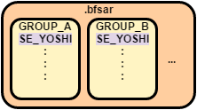
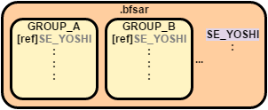
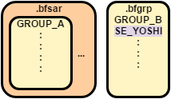

Contents
Loading Resources
To play back sound data, you must load the sound data from resource files into memory.
The sound data that is used in the AtkSimple sample is loaded individually from nn::atk::FsSoundArchive using nn::atk::SoundDataManager::LoadData. Various scenarios are possible for actual games, however, including placing all sound data from a small resource file in memory, and loading all the sound data at one time to use in a game scene.
This section describes functionality for loading resources of this kind.
Using Sound Archives
There are two general formats for the atk library to use the sound archive (BFSAR) files created with SoundMaker: nn::atk::MemorySoundArchive and nn::atk::FsSoundArchive.
(There are also sound archives in the form of nn::atk::AddonSoundArchive objects, but they are described separately in Loading Using Add-On Sound Archives.)
Resources are loaded differently depending on the format of the sound archive. Choose the format based on your game because the differences affect memory use and file access.
|
|
MemorySoundArchive | FsSoundArchive |
|---|---|---|
| Handling BFSAR Files | Place All BFSAR Files in Memory | Only Place Needed Data From BFSAR Files in Memory |
| Recommended Uses |
The BFSAR files are small, or there is room in memory. |
Need to keep memory use low. |
| Memory Use | Large | Low - Medium |
| File access | Only occurs the first time placing in memory. | An appropriate amount of sound date is loaded. |
MemorySoundArchive
Places all sound archive files in memory.
Placing all sound data in memory eliminates the need to load data before playback, but memory use increases.
This is a good choice when the resource files are small, there is sufficient space in memory, or when you do not want to manage resource loading in detail.
Using MemorySoundArchive
To use MemorySoundArchive, you must load the BFSAR sound archive file into memory before initializing the sound archive.
After loading the BFSAR files into memory, pass the address where the BFSAR files were loaded to nn::atk::MemorySoundArchive::Initialize.
The playback of sounds within BFSAR files is possible without calling nn::atk::SoundDataManager::LoadData if the basic initialization of the atk library is complete.
You cannot play stream sounds back when using MemorySoundArchive.
You must set an appropriate root directory to nn::atk::SoundArchive::SetExternalFileRoot to play back stream sounds.
FsSoundArchive
Only the necessary sound data is loaded from sound archive files and placed in memory.
You can limit memory usage by placing only the needed sound data in memory, but this requires that you manage resource loading to control which sound data is loaded and when.
Use this option to place only necessary sound data in memory and to manage memory use.
It may be easier to manage resource loading when you combine heaps introduced in Memory Management, and group features, described in the following section.
Use these features depending on the needs of your game.
Using FsSoundArchive
For more information, see the description in the Initializing Sound Archives section in the Quick Start.
Loading Using Add-On Sound Archives
An add-on sound archive is an archive that can be used to add sound items after SoundArchivePlayer has been initialized in combination with the FsSoundArchive and MemorySoundArchive objects that were configured at the time of initialization.
(From now on, FsSoundArchive and MemorySoundArchive will be referred to as the main sound archives.)
By combining the main sound archives with add-on sound archives, you can use a single SoundArchivePlayer to handle multiple sound archives.
You can create add-on sound archives for sounds that are used only in a certain game scene, or for sounds that are included in downloadable content. By adding these archives to a sound archive player, you can add sound items when they are needed.
In addition, you can clear out sound items by removing add-on sound archives from the sound archive player after they are finished being used, which reduces the number of resident sound items and cuts down on memory usage.
The following sections describe the specification for add-on sound archives, and how to use them.
Specification for Add-On Sound Archives
Add-on sound archives (nn::atk::AddonSoundArchive) inherit MemorySoundArchive, so they are used in the same way, which is by loading sound archive files into memory.
As a result, operations such as reading resources, accessing files, and loading strings for items are all handled the same way as with MemorySoundArchive.
For more information about handling add-on sound archives, see Guide > Add-On Sound Archives.
Using Add-On Sound Archives
First, specify the maximum number of add-on sound archives that can be used and initialize SoundArchivePlayer.
Next, load the sound archive file (BFSAR file), that will become the add-on sound archive, into memory. This is the same procedure as for MemorySoundArchive.
After the BFSAR file has been loaded into memory, initialize the add-on sound archive and SoundDataManager object that will be used with it.
Next, add the add-on sound archive to an initialized SoundArchivePlayer.
This step makes it possible to play the sounds inside the add-on sound archive.
To actually play the sounds inside the add-on sound archive, specify the name of the add-on sound archive as an argument during playback.
Add-on sound archives work the same way as MemorySoundArchive, so you do not need to call nn::atk::SoundDataManager::LoadData.
After you finish using an add-on sound archive, remove it from SoundArchivePlayer.
After removing the add-on sound archive, finalize the add-on sound archive and the SoundDataManager object that will be used with it, and free the memory.
In comparison with groups (described in the following section), add-on sound archives offer several advantages including easier handling of add-on content such as downloadable content and the ability to manage sound archives on a per-archive basis, which makes sound archive management more intuitive.
Meanwhile, loading using groups makes it possible to achieve more fine-tuned control by working on a per-item basis, for example.
Loading Using a Group
You can combine data to load at the same time, into a group.
You cannot only use groups to avoid the issue of loading sound data separately, but combining data can also increase loading efficiency.
Group Differences
Choose the format for groups configured using SoundMaker to suit your game. There are differences, including whether any data is duplicated and how loading occurs.
(For more information about how to configure groups using SoundMaker, see Groups within the SoundMaker documentation.)
(For differences in how groups are loaded in a program, see AtkGroup Sample.)
|
|
Embedded Groups | Linked Groups | User-Managed Groups | No Groups |
|---|---|---|---|---|
| Handling Sound Data | Embedded in groups that are included in the BFSAR file. | Included in the BFSAR file in an area that is not a group. The group only includes the reference information. |
Exported to a separate BFGRP file. |
Included outside of a BFSAR group. |
| Recommended Uses | For more efficient file loading. | To reduce duplicate data and keep sizes smaller. | Controls file access processing within the game. | Loads data separately. |
| Duplicate Data? | The data is present in each group and there can be duplicates of the data in the BFSAR file. |
Data can straddle groups, but there are no duplicates in the BFSAR file. |
Every BFGRP file contains data, and the data may be duplicated in a BFSAR file or another BFGRP file. |
The data is not in a group, so there might be duplicate data in another group. |
| Loading Data | Loaded with other data within the group. |
Data specified with a link can be loaded separately from a group. |
Load with other data within the BFGRP file. Must be loaded by the game, but it is a separate file, so it can be archived with non-audio files. |
Loading occurs at the sound data level. |
Embedded Groups
Includes target sound data within a group.
Duplicates of the data can arise among groups because the data is included in each group that it is associated with. However, all data in a group is loaded together, so you can expect better file access efficiency compared to separate loading.
Use this option to improve file access efficiency when there is a certain number of resource files and a certain amount of memory available.

Loading Sound Data Included in Embedded Groups
Load groups that include the target sound data by using nn::atk::SoundDataManager::LoadData.
bool result = g_SoundDataManager.LoadData( GROUP_EMBEDDED, &g_SoundHeap ); |
Linked Groups
Puts the target sound data in a BFSAR sound archive file without including it in a group.
You can avoid data duplicates when data is associated with multiple groups, but there will be more accessing of files compared to embedded groups because other data within the group is loaded separately.
Use this option to conserve resource files, and memory, when a certain amount of file access is acceptable.

Loading Sound Data Included in Linked Groups
Load groups, as with embedded groups, that include the target sound data by using nn::atk::SoundDataManager::LoadData.
bool result = g_SoundDataManager.LoadData( GROUP_LINKED, &g_SoundHeap ); |
User-Managed Groups
Exports the target sound data as a separate BFGRP group file and manages group files within the game.
The characteristics for data duplication and loading are similar to those for embedded groups. The use of separate files enables control over file access in the game.
The efficiency of file access can be improved compared to embedded groups if you do things like create an archive from all the graphics files and sound group files used in a particular game scene and load that archive.
Use this option to manage file access from within the game.

You cannot use a player heap for playback when sound items are only within a user-managed group.
Adjust so that the target sound items meet one of the following conditions to use the player heap for playback.
- Not included in a user-managed group.
- Included in a user-managed group, but also included in a separate embedded or linked group
Loading Sound Data Included in User-Managed Groups
Set the address where a BFGRP group file, that includes the target sound data, was loaded to nn::atk::SoundDataManager::SetFileAddressInGroupFile.
bool result = g_SoundDataManager.SetFileAddressInGroupFile( g_pMemoryForGroupFile, g_GroupFileSize ); |
No Groups
Sound data is used without including it in any groups.
Use this option to load sound data separately.
Loading Sound Data Not Included in a Group
Load the target sound data by using nn::atk::SoundDataManager::LoadData.
Load sound data using this method in the AtkSimple Sample.
bool result = g_SoundDataManager.LoadData( SE_YOSHI, &g_SoundHeap ); |
CONFIDENTIAL